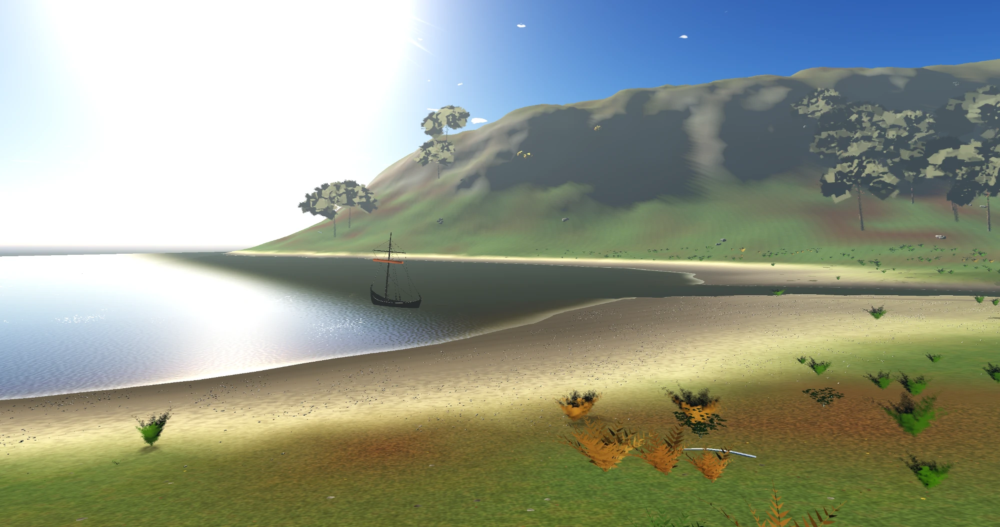

Notes from the valley
Making Transect, a walk through a procedural valley, and the assets that fill it.
Development notes on the landscape, the tools, and getting it all running in a browser.
Play Transect · Browse the asset catalog

Latest posts
Transect is out—and you can use the assets
A walk through the valley, why I built it, and where to find assets for your own games.
Loading a procedural world in Godot on the web
Working within a 64 MB preview budget, moving asset construction to workers, and investigating a cave hitch that threads didn’t fix.